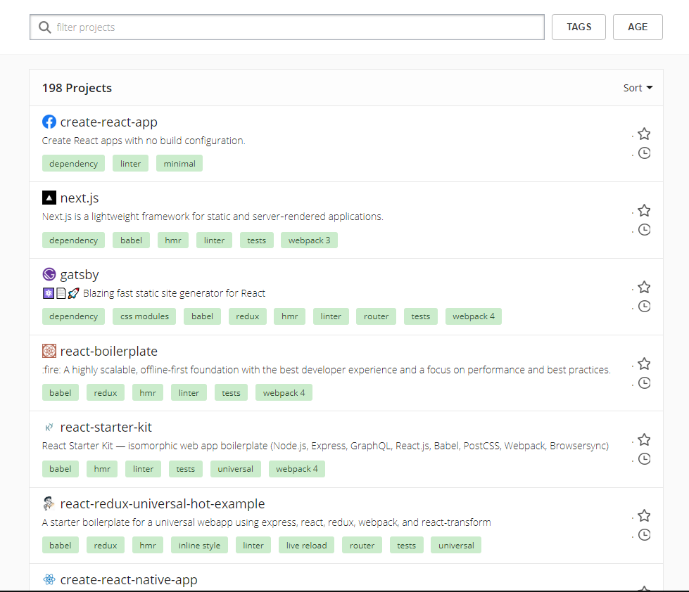

These are repositories that you copy and modify to create your own React app. Pick a starter project with all the features you need, and none that you don’t.
To get started with most of these, you would clone the repository and then start making modifications.
Other starters are installed rather than copied: they become a dependency of your project. Thesedependency starters make it easier to get updates and they keep your project directory cleaner (because much of the code is wrapped in the dependency)
